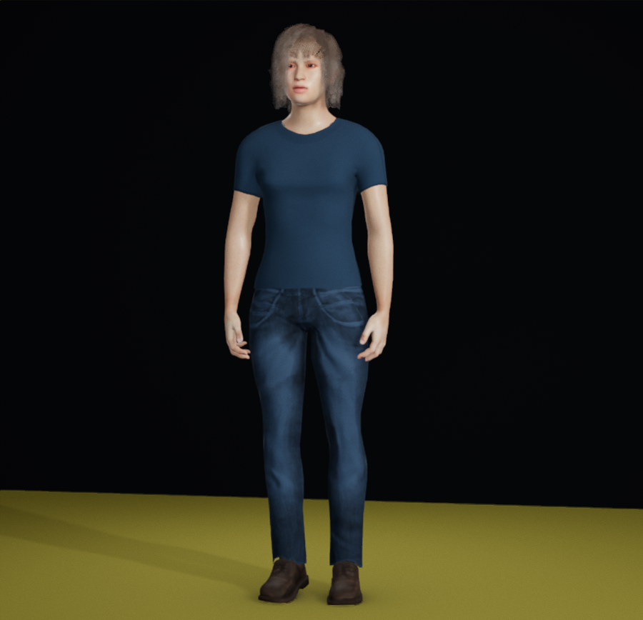
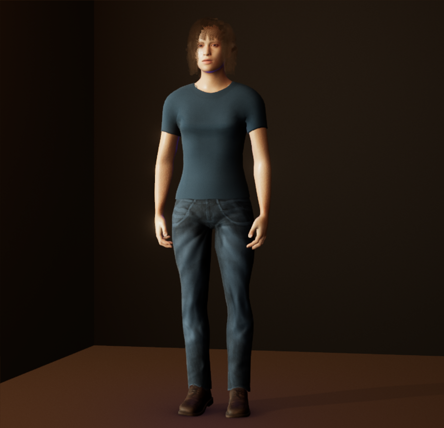
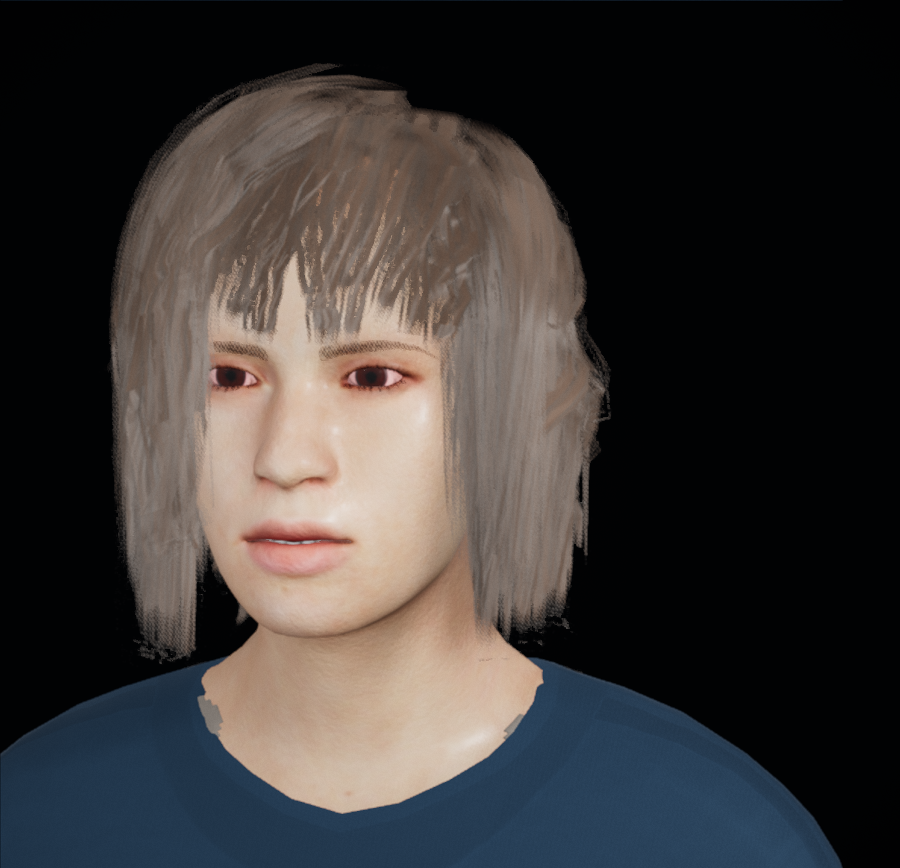
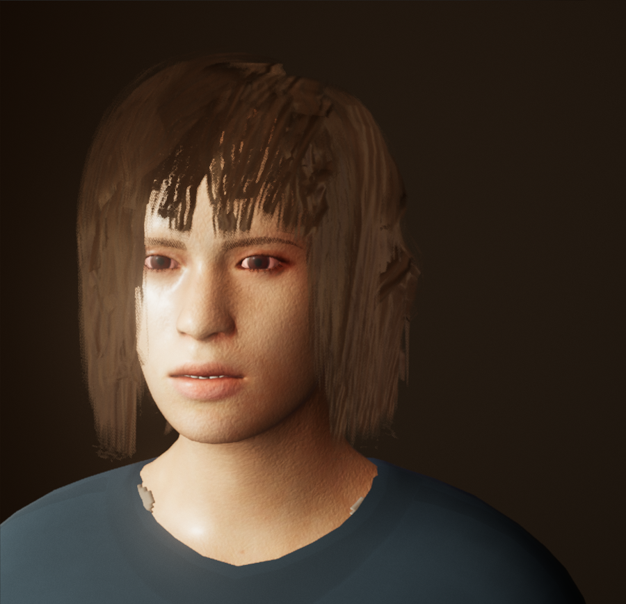
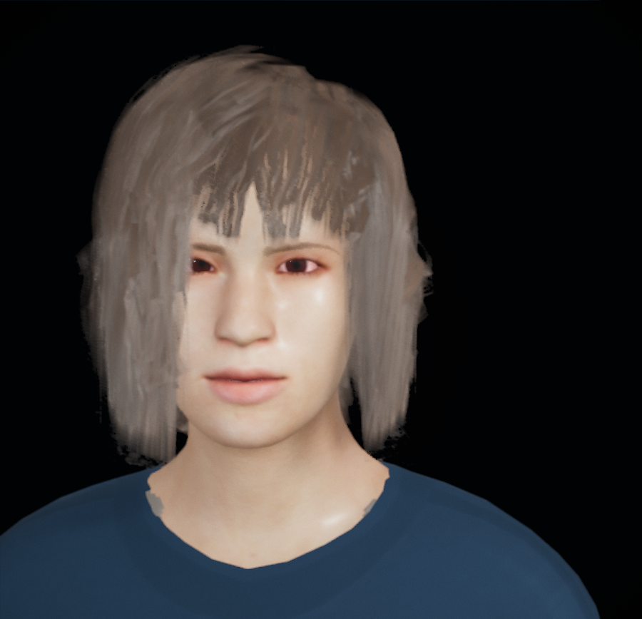
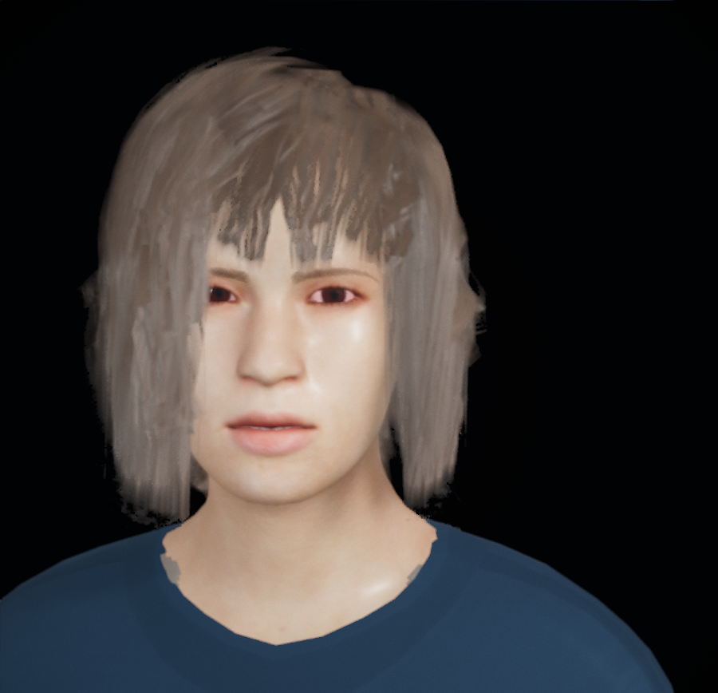

Sugata · captured wardrobe study
Ink and denim
A navy tee, tonal denim and warm brown shoes, with the chin-length bob and untinted Brown hair setting. These captured views use the current g050 body study.
In the editor, choose Open settings (JSON) ↑ and select the downloaded file. It opens in Neutral Studio with the full outfit.




Existing small smile · two separate stills
Both are Neutral Studio portraits. They show a subtle captured change, rather than a continuous movement preview. Release returns the action to idle; it does not restore the initial head pose.




What these views show
Colours vary with the room lighting; Neutral Studio is an inspection option, not colour calibration. Coarse hair cards, stipple and jagged neckline edges remain visible in the portraits.
This is an optional clothing composition. These six captured views do not qualify other bodies, every angle, fit or continuous expression and movement.